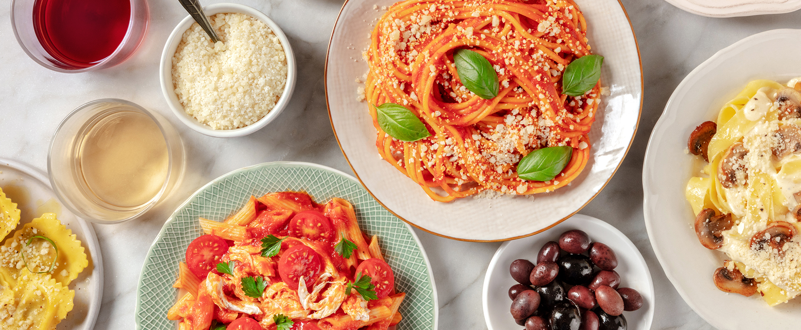
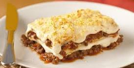
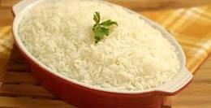
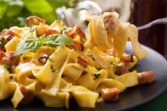

massas boas
Entretanto, especialistas alertam: embora seja uma fonte de energia para atividades físicas, macarrão em excesso pode causar diabetes, aumento de colesterol e triglicérides e, claro, engordar. No Brasil, os três pratos favoritos escolhidos pela população foram lasanha, arroz e massa, de acordo com o estudo
massas boas


